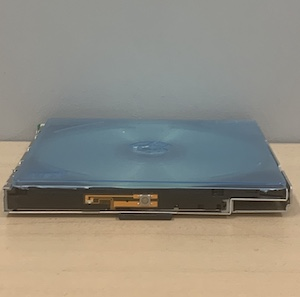
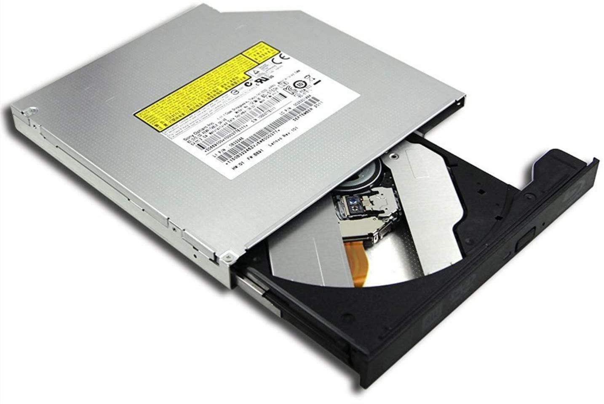

the
preserved hardcopy of music, mini-games, and moving images
comes packaged in internal cd traytop view
front view
push the button and the tongue will come out. the tray is a case to keep this cd, or any other cd,
but will not function as an actual internal cd drive